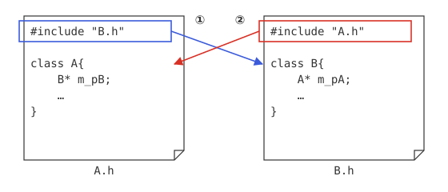
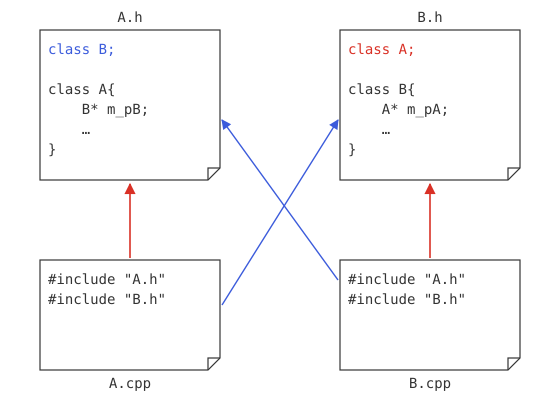

クラスの相互参照
C++のクラスの相互参照
C言語のケースと同様、C++のプログラムでも、ある程度複雑になると、多数のクラスが存在し、互いに参照するようになります。その参照関係は、どちらか一方が他方を一方的に利用・参照する関係ばかりとは限りません。場合によっては、複数のクラスが互いに参照しあうようなケースも考えられます。ここでは、そういったケースのソースコードの作成方法について説明します。
#includeの問題点
C++である程度実用的なプログラムを作成しようとする場合、避けて通れないのが、このクラスの相互参照です。あるクラスAとクラスBがあり、互いに参照する必要があるとします。このとき、通常であれば、以下のようにヘッダーファイルを定義するでしょう。
#ifndef A_H
#define A_H
#include "B.h"
class A{
B* m_bB;
…
}
#endif // A_H
#ifndef B_H
#define B_H
#include "A.h"
class B{
A* m_bA;
…
}
#endif // B_H
この方法の問題点は、仮にA.hで、クラスBを使用する際、B.hをインクルードすることになりますが、その際、B.hの中でも、クラスAを利用することになることから、いつまでたっても#includeの処理が終わらないということにあります。（図2-1）

図2-1：ヘッダファイルで相互にインクルードする際の問題点
つまり、この方法ではビルドエラーが発生します。しかし、このように複数のクラスが互いを参照することはよくあることです。では、どうすればよいのでしょうか？
サンプルコード
この問題に対応するためには、以下のようにすれば解決できます。
#ifndef A_H
#define A_H
class B; // クラスBへの参照
class A{
private:
B* m_pB;
public:
A(); // コンストラクタ
void foo();
void bar();
};
#endif // A_H
#ifndef B_H
#define B_H
class A; // クラスAへの参照
class B{
private:
A* m_pA;
public:
B(A* pA);
void hoge();
};
#endif // B_H
#include "A.h"
#include "B.h"
#include <iostream>
using namespace std;
A::A(){
m_pB = new B(this);
}
void A::foo(){
cout << "foo" << endl;
}
void A::bar(){
m_pB->hoge();
}
#include "A.h"
#include "B.h"
#include <iostream>
using namespace std;
B::B(A* pA){
m_pA = pA;
}
void B::hoge(){
cout << "bar" << endl;
m_pA->foo();
}
#include <iostream>
#include "A.h"
#include "B.h"
using namespace std;
int main(){
A a;
a.foo();
a.bar();
return 0;
}
bar
foo
A.hの4行目および、B.hの4行目を参照して下さい。ここでは、classの後に、参照するクラスのクラス名を記述するだけでクラスを参照することができます。使用する際は、.cppファイルで必要なヘッダファイルをインクルードします。(図2-2.)

図2-2：クラスの相互参照のイメージ
参照するクラスが増えても、この方法を用いれば、問題ありません。
thisポインタ
続いて、プログラムの中身を見てみましょう。まず、A.cppの8行目を見てください。
ここで出てくる、thisというポインタは何でしょう？実は、これは、thisポインタと言い、自分自身を表すポインタです。B.hを見てみると、クラスBのコンストラクタ（B.hの10行目）の中で、
としています。つまり、Bのコンストラクタには、引数として、Aクラスのインスタンスを渡すことになるわけです。そのため、Aクラス内でBクラスを生成する際に、自分自身のポインタを渡しているのです。
const修飾子
クラス間の相互参照の問題点
このように、クラス間の相互参照を行うようになると、いろいろな問題が発生します。たとえば、引数として、あるクラスのインスタンスを渡した場合、それによって、インスタンスのメンバ変数などの値が変化するか、といった問題です。
そこで、インスタンスのポインタおよび参照を渡す場合、それによって、引数の状態が変更されないことを保証することができます。それを可能にするのが、const修飾子です。
constによる定数の定義
詳しい説明をする前に、まずは、一番簡単なconstの使い方を見てみましょう。constは通常、以下のように定数を表す修飾子として使用されます。
max = 130; // コンパイル エラー(constの定数の値を変更しようとしたので)
このように、定数を定義するのが、constの役割です。
引数のconst
さらに、constは、関数の引数にもつけることができます。
void bar(const A& pA); // Aはクラス名（参照の場合）
これにより、Aクラスのインスタンス、pAの値は変更されないことが保証されます。もしこの関数のなかで、値を変更するような処理をした場合、エラーが発生します。ポインタの場合も、参照の場合も、同じ使用方法ができます。
constメンバ関数
また、メンバ関数にもconstを付加することができます。この場合、このメソッドを呼び出すことによって、インスタンス内のメンバ変数が変化することがないことを保証します。
サンプルプログラム
では、実際にconstのサンプルプログラムを見てみましょう。
#ifndef SAMPLE_H
#define SAMPLE_H
#include <iostream>
#include <string>
using namespace std;
class Sample{
private:
string m_str;
public:
Sample();
void setStr(const string str); // 引数をconstに
string getStr() const; // メンバ関数のconst
public:
static const int m_cst = 100; // 定数
};
#endif // SAMPLE_H
#include "Sample.h"
Sample::Sample(){
m_str = "";
}
void Sample::setStr(const string str)
{
m_str = str;
//str = "";
}
string Sample::getStr() const
{
// m_str = "";
return m_str;
}
#include <iostream>
#include <string>
#include "Sample.h"
using namespace std;
int main(){
Sample s;
cout << "定数：" << s.m_cst << endl;
s.setStr("ABC"); // 値の設定
cout << s.getStr() << endl; // 値の取得
return 0;
}
ABC
Sample.hの17行目では、int型の定数、m_cstを定義しています。通常のメンバ変数と違い、ヘッダファイルの中で定義できます。ただ、この場合、先頭にconstをつける必要があります。
次に、14行目、および15行目を見て下さい。これは、string型のメンバ変数m_strのセッターとゲッターです。セッターは、引数に、const、ゲッターがconstのメンバ関数になっています。
そのため、Sample.cppの9行目のコメントを取ると、ビルドエラーになります。これは、const指定した引数の値を変更しようとしたためです。同じく、13行目のコメントをとってもエラーになります。これは、const指定したメソッドの中で、メンバ変数の値を変えようとしたためです。
constまとめ
以上のconst修飾子の使い方による意味の違いをまとめると、以下の表(表2-1.)のようになります。
| 使用場所 | 使用例 | 意味 | 解説 |
|---|---|---|---|
| 変数の前 | const int a = 100; | 定数の定義 | 定数として値を変更できない |
| メンバ関数の引数 | void setNum(const int a); | 引数の変更不可能 | 関数内では、引数の状態が変化しない |
| メンバ関数の後ろ | int getNum() const; | メンバ変数の変更不可能 | 関数内では、メンバ変数の状態が変化しない |
constが使われるその他の意味
このように、定数を定義したり、値が変更されないことを保証するconst修飾子ですが、実は、それ以外にも意味があります。まず一つは、constをつけることで、コンパイラは最適化をしやすくなり、処理速度を向上させたり、メモリを効率的に使用することが可能であるとされています。また、同時に、変数の使用方法に制限をつけることで、プログラミングの誤りを未然に防ぐことができる、といった効果があります。